require(here)
source(here::here('R/build-df.R'))
source(here::here('R/format-study-results.R'))
source(here::here('R/parse-model-output.R'))Preprocessing
This assumes that the data has been parsed from the BibTeX files into table and exported as CSV file.
Read annotated data
library(stringr)
# get metaMER df:
meta_df <- get_metaMER_df(path_2_studies = here::here('studies'))
# get included studies
included_studies <- meta_df[which(
!stringr::str_detect(meta_df$final_notes, '!EXCL!')),] |>
dplyr::tibble()Recoded
# get studies re-coded (currently identifiable by presence of bind_field.)
recoded_studies <- included_studies[which(stringr::str_detect(
included_studies$model_rate_emotion_values,
'bind_field')),] Add unique identifiers
metaMER_results <-
do.call(
rbind,
lapply(1:nrow(recoded_studies),
function(x) get_study_results(recoded_studies[x,])
)
)
# add unique identifiers
unique_id <- apply(metaMER_results[,c('citekey',
'library_id',
'model_id',
'feature_id',
'data_id',
'experiment_id')],
1,
paste0,
collapse = '-'
)
metaMER_results$unique_id <- stringr::str_remove_all(unique_id,
' ')
metaMER_results <- metaMER_results |> dplyr::select(unique_id,
dplyr::everything())
metaMER_results |> dplyr::tibble()# A tibble: 1,284 × 19
unique_id citekey journal stimulus_genre model_category stimulus_n feature_n
<chr> <chr> <chr> <chr> <chr> <chr> <chr>
1 agarwal20… agarwa… " IE… " popular, hi… classification " ISMIR20… " 'eight…
2 agarwal20… agarwa… " IE… " popular, hi… classification " ISMIR20… " 'eight…
3 agarwal20… agarwa… " IE… " popular, hi… classification " ISMIR20… " 'eight…
4 agarwal20… agarwa… " IE… " popular, hi… classification " ISMIR20… " 'eight…
5 agarwal20… agarwa… " IE… " popular, hi… classification " ISMIR20… " 'eight…
6 agarwal20… agarwa… " IE… " popular, hi… classification " ISMIR20… " 'eight…
7 agarwal20… agarwa… " IE… " popular, hi… classification " ISMIR20… " 'eight…
8 agarwal20… agarwa… " IE… " popular, hi… classification " ISMIR20… " 'eight…
9 agarwal20… agarwa… " IE… " popular, hi… classification " ISMIR20… " 'eight…
10 agarwal20… agarwa… " IE… " popular, hi… classification " ISMIR20… " 'eight…
# ℹ 1,274 more rows
# ℹ 12 more variables: participant_n <chr>, feature_source <chr>,
# feature_reduction_method <chr>, library_id <chr>, model_id <chr>,
# feature_id <chr>, data_id <chr>, experiment_id <chr>, dimension <chr>,
# measure <chr>, statistic <chr>, values <dbl>Summarise annotated data (optional)
print(knitr::kable(table(metaMER_results$citekey,metaMER_results$dimension)))
print(knitr::kable(table(metaMER_results$citekey,metaMER_results$model_id)))
print(knitr::kable(table(metaMER_results$citekey,metaMER_results$feature_id)))
print(knitr::kable(table(metaMER_results$citekey,metaMER_results$data_id)))Classify modelling techniques used
# Classify techniques according Hastie, Tibshirani, Friedman (2008)
# https://www.sas.upenn.edu/~fdiebold/NoHesitations/BookAdvanced.pdf
#
library(stringr)
metaMER_results$model_id <- tolower(metaMER_results$model_id)
metaMER_results$model_class_id <- 'Unclassified'
metaMER_results$model_class_id[str_detect(metaMER_results$model_id,'lr|lm|pls|mlr|pcr|logistic regression|2d model full|pentagon|gaussian process regression|sparse bayesian regression|variational bayesian regression|logistic regression|lda|rda|regularized discriminant analysis|reguliarized discriminant analysis')] <- 'Linear Methods' # Class name from Elements of Stat.."
#metaMER_results$model_class_id[str_detect(metaMER_results$model_id,'logistic regression|lda|rda|regularized discriminant analysis|reguliarized discriminant analysis')] <- 'Linear Classification'
#metaMER_results$model_class_id[str_detect(metaMER_results$model_id,'mars|gam')]<-'Additive Trees and Related Methods' #
metaMER_results$model_class_id[str_detect(metaMER_results$model_id,'rbf|gmm|local|polynomial|polygonal|knn|mars|gam')]<-'Kernel Smoothing, Additive and KNN'
#metaMER_results$model_class_id[str_detect(metaMER_results$model_id,'adaboost|gradient')]<-'Boosting'
metaMER_results$model_class_id[str_detect(metaMER_results$model_id,'nn|gru|lstm|ltsm|long short term memory|rprop|mcan')]<-'Neural Nets'
metaMER_results$model_class_id[str_detect(metaMER_results$model_id,'svm|svr|support vector regression|smoreg|smo ')]<-'Flexible Discriminants'
#metaMER_results$model_class_id[str_detect(metaMER_results$model_id,'knn')]<-'Prototype methods'
metaMER_results$model_class_id[str_detect(metaMER_results$model_id,'rf|extremely randomized tree regression|random forest|adaboost|gradient')]<-'Random Forests'
#metaMER_results$model_class_id[str_detect(metaMER_results$model_id,'rf')]<-'Ensemble Learning'Classify stimulus genres
metaMER_results$stimulus_genre_mixed <- 'SingleGenre'
metaMER_results$stimulus_genre_mixed[str_detect(metaMER_results$stimulus_genre,',|multi')] <- 'MultiGenre' # Class name from Elements of Stat.."
#table(metaMER_results$stimulus_genre_mixed)Classify journals
metaMER_results$journal_type <- "Engineering"
metaMER_results$journal_type[str_detect(metaMER_results$journal,'Quarterly Journal of Experimental Psychology|PSYCHOLOGY OF MUSIC|PLOS ONE|JOURNAL OF NEW MUSIC RESEARCH|IEEE-ACM TRANSACTIONS ON AUDIO SPEECH AND LANGUAGE PROCESSING|FRONTIERS IN PSYCHOLOGY|Frontiers in Psychology')] <- 'Psychology' # Class name from Elements of Stat.."
#table(metaMER_results$journal_type)Summarise all
print(knitr::kable(table(metaMER_results$model_class_id)))| Var1 | Freq |
|---|---|
| Flexible Discriminants | 379 |
| Kernel Smoothing, Additive and KNN | 114 |
| Linear Methods | 257 |
| Neural Nets | 384 |
| Random Forests | 125 |
| Unclassified | 25 |
print(knitr::kable(table(metaMER_results$model_class_id,metaMER_results$model_category)))| classification | regression | |
|---|---|---|
| Flexible Discriminants | 177 | 202 |
| Kernel Smoothing, Additive and KNN | 18 | 96 |
| Linear Methods | 71 | 186 |
| Neural Nets | 270 | 114 |
| Random Forests | 79 | 46 |
| Unclassified | 25 | 0 |
cat(paste("We have", nrow(metaMER_results), "observations"))We have 1284 observations
cat(paste("\nWe have", length(unique(metaMER_results$citekey)), "studies"))We have 36 studies
cat(paste("\nWhere", length(unique(metaMER_results$citekey[metaMER_results$model_category=='regression'])), "are regression studies"))Where 22 are regression studies
cat(paste("\nWhere", length(unique(metaMER_results$citekey[metaMER_results$model_category=='classification'])), "are classification studies"))Where 14 are classification studies
# note that we have some classification studies that also do regression and vice versa?
# THIS IS CORRECT (updated 12 July 2024):
# [1] "We have 1238 observations"
# [1] "We have 37 studies"
# [1] "Where 23 are regression studies"
# [1] "Where 14 are classification studies"
# Add a check for these properties ToDo2024-10-21: Update studies with multiple unique_ids due to multiple stats reported
metaMER_results <- metaMER_results |>
dplyr::filter(!(citekey == "zhang2017fe" & statistic == "mean"),
!(citekey == "zhang2016br" & statistic == "mean"),
!(citekey == "zhang2016br" & is.na(values)),
!(citekey == "coutinho2017sh" & statistic == "ccc"),
# Include only results for energy arousal
!(citekey == "wang2022cr" & dimension == "tension arousal"),
!(citekey == "wang2021ac" & dimension == "tension arousal"),
!(citekey == "deng2015em" & dimension == "resonance"))Deal with repeated experiment IDs in hu2017cr
# get citation keys (all currently say experiment 1)
hu2017models <- metaMER_results[str_detect(metaMER_results$citekey,
"hu2017cr"),]$unique_id
# replace the last digit with 1:4 (representing each experiment)
hu2017models_replacement <- paste0(
substr(hu2017models,
1,
nchar(hu2017models) - 1),
1:4
)
# overwrite original values
metaMER_results[metaMER_results$unique_id %in%
hu2017models,]$unique_id <- hu2017models_replacementPull data to analyse regression studies
unique(metaMER_results$citekey[metaMER_results$model_category=="regression"]) [1] "yang2021an" "bai2016di" "battcock2021in" "beveridge2018po"
[5] "chen2017co" "deng2015em" "gingras2014be" "grekow2018au"
[9] "griffiths2021am" "hu2017cr" "koh2023me" "markov2014mu"
[13] "orjesek2022en" "saizclar2022pr" "wang2021ac" "wang2022co"
[17] "wang2022cr" "xie2020mu" "xu2021us" "zhang2019us"
[21] "zhang2023mo" R_studies <- dplyr::filter(metaMER_results, measure %in% c('r','ccc','pcc','cc','r2','R2')) #
# explicit NA coding
R_studies$statistic[is.na(R_studies$statistic)]<-'r2'
# include measures we need
R_studies <- dplyr::filter(R_studies,str_detect(statistic,'adjusted|ccc|pcc|cc|globalOptimal|localOptimal|mean|r2|r'))
dim(R_studies)[1] 336 23table(R_studies$measure)
cc ccc pcc r r2
2 4 4 22 304 table(R_studies$measure, R_studies$statistic)
adjusted cc mean r r2
cc 0 2 0 0 0
ccc 0 0 4 0 0
pcc 0 0 4 0 0
r 0 0 4 18 0
r2 12 0 28 0 264R_studies$values[R_studies$measure=='R2']<-sqrt(R_studies$values[R_studies$measure=='R2']) # recode R2 into r
R_studies$values[R_studies$measure=='r2']<-sqrt(R_studies$values[R_studies$measure=='r2']) # recode R2 into rRemove NAs
R_studies <- R_studies[!is.na(R_studies$values),]Check models aren’t double-counted
length(unique(paste0(R_studies$unique_id, R_studies$dimension)))[1] 324ez::ezDesign(data = R_studies, x = unique_id, y = citekey)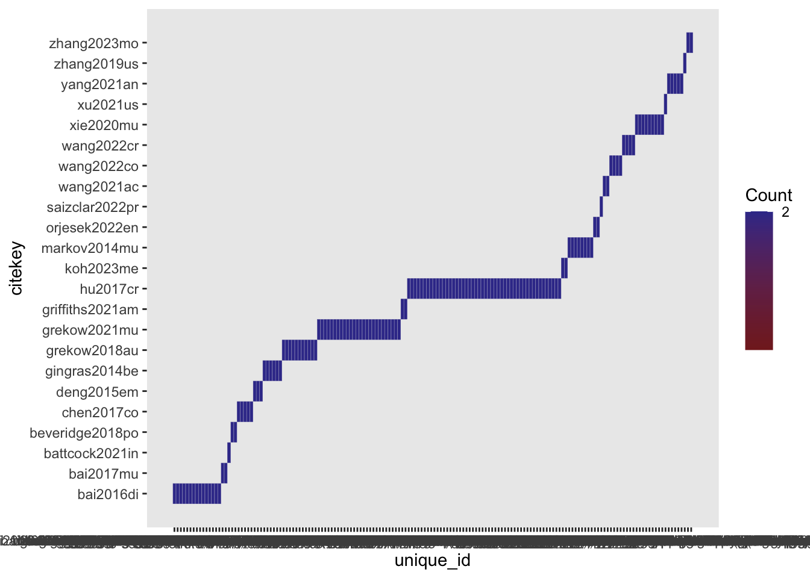
Homogenise the outcome variable names to valence and arousal
R_studies$dimension[str_detect(R_studies$dimension,'activation|energy arousal|tension arousal')]<-'arousal' # note: there is no longer "tension arousal" based on decision to include only energy
R_studies$dimension[str_detect(R_studies$dimension,'pleasantness')]<-'valence'
R_studies <- dplyr::filter(R_studies,!str_detect(dimension,'av|resonance')) # relates to distances, can be omitted
table(R_studies$dimension)
arousal valence
162 162 #table(R_studies$stimulus_n)
# Deal with four studies involving multiple datasets:
R_studies$stimulus_n[R_studies$stimulus_n==" emoMusic: 744, soundtracks: 360, chinese: 500 "] <- 938 # resolved from the paper
R_studies$stimulus_n[R_studies$stimulus_n==" 2372 (subset of PSIC3839, total n: 3839) "] <- 2372 # resolved
R_studies$stimulus_n[R_studies$stimulus_n==" study 1: 20; study 2: 40) % three outliers "] <- 40 # decided to take this from validation
R_studies$stimulus_n[R_studies$stimulus_n==" study 1: 100; study 2: 20"] <- 20 #
R_studies$stimulus_n[R_studies$stimulus_n==" DEAM: 744, PMEmo: 206 "] <- 744 # we have encoded this based on stronger results on DEAM compared to PMEmo.
R_studies$stimulus_n[R_studies$stimulus_n==" NTUMIR: 60, MediaEval2013: 744 "] <- 60 # we have encoded this based on stronger results on NTUMIR compared to MediaEval
R_studies$stimulus_n[R_studies$stimulus_n==" 1020; MediaEval2014: 1000: music perception database 1: 6, music perception database 2: 9, music perception database 3: 8, music perception database 4: 7 "] <- 1020
# REDO with a clearer function
eliminate <- str_detect(R_studies$unique_id,"hu2017cr") & !str_detect(R_studies$unique_id,"all")
R_studies <- R_studies[!eliminate,]
R_studies$stimulus_n[R_studies$stimulus_n==" MER60: 60, CH818: 818, AMG1608: 1608 "] <- 60+818+1608 #
table(R_studies$stimulus_n)
146 1838 275 324 336 40 420 431 48 54
8 10 6 74 2 2 2 4 4 4
744 744 744 84 20 2372 2486 40 744 938
30 30 18 12 4 2 8 4 4 8 R_studies$stimulus_n <- as.numeric(R_studies$stimulus_n)Clean feature N field
R_studies$feature_n[R_studies$feature_n==" 548; after reduction, 139 for PCA and 276 for ReliefF "] <- 548
R_studies$feature_n[str_detect(R_studies$feature_n,'pre_fitting')] <- 21
R_studies$feature_n[str_detect(R_studies$feature_n,'but 15 reported')]<-15
R_studies$feature_n[str_detect(R_studies$feature_n,'50 PCA features')]<-50
R_studies$feature_n[str_detect(R_studies$feature_n,'548 dimensions. Pos')]<-548
R_studies$feature_n[str_detect(R_studies$feature_n,'60 handcrafted and')]<-60 # this should be 14400+60!
R_studies$feature_n[str_detect(R_studies$feature_n,'before_selection = 45')]<-45
R_studies$feature_n[str_detect(R_studies$feature_n,'model 4 = 388')]<-388
R_studies$feature_n[str_detect(R_studies$feature_n,'6670 in MediaEval')]<-6670
R_studies$feature_n[str_detect(R_studies$feature_n,'557 before feature')]<-557
R_studies$feature_n[str_detect(R_studies$feature_n,'not specified')]<-NA
R_studies$feature_n<-as.numeric(R_studies$feature_n)
quantile(R_studies$feature_n,c(0.333,0.666),na.rm = TRUE)33.3% 66.6%
72 653 quantile(R_studies$feature_n,c(0.25,0.500,0.750),na.rm = TRUE)25% 50% 75%
50 548 653 quantile(R_studies$feature_n,c(0.1,0.500,0.90),na.rm = TRUE)10% 50% 90%
18 548 654 R_studies$feature_n_categories <-cut(R_studies$feature_n,
breaks = c(0,18,260,
10000),
labels = c("Feature n < 18","Feature n > 18 & < 260","Feature n > 260"))Diagnostics
library(ggplot2)
g1<-ggplot(R_studies,aes(x=values,fill=citekey,color=dimension))+
geom_histogram()+
facet_wrap(.~model_class_id)+
# scale_color_manual(values = c('black','white'))+
theme_dark()+
scale_x_continuous(breaks = seq(0,1,by=.1))
g1`stat_bin()` using `bins = 30`. Pick better value with `binwidth`.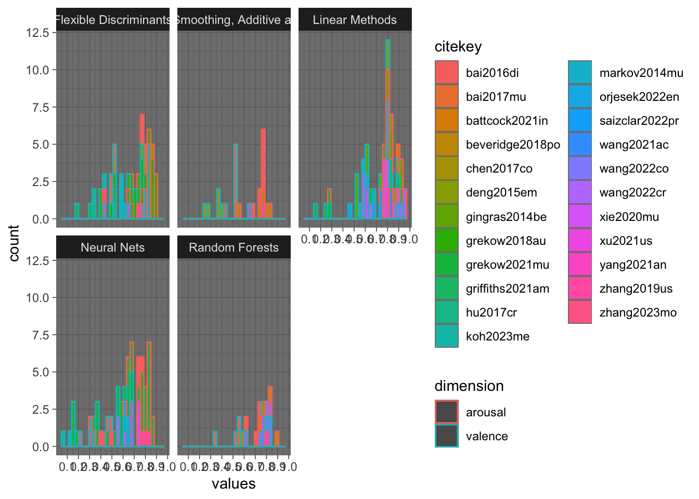
Feature N and genre split
quantile(subset(R_studies,stimulus_genre_mixed=='SingleGenre')$feature_n,probs = seq(0,1,0.333)) 0% 33.3% 66.6% 99.9%
3 21 72 201 quantile(subset(R_studies,stimulus_genre_mixed=='MultiGenre')$feature_n,na.rm=TRUE,probs = seq(0,1,0.333)) 0% 33.3% 66.6% 99.9%
15 388 653 6670 # a combination of the two
R_studies$feature_n_complexity_genre <- cut(R_studies$feature_n,
breaks = c(0,15,501,653,10000),
labels = c("Small single genre study","Medium single genre/multigenre study","Medium-large single genre/multigenre study","Huge multigenre study"))
table(R_studies$feature_n_complexity_genre)
Small single genre study
18
Medium single genre/multigenre study
92
Medium-large single genre/multigenre study
94
Huge multigenre study
32 Select a summary measure for valence and arousal separately
Note: Before adding feature_n to the summary, they need to be cleaned!
library(tidyverse)── Attaching core tidyverse packages ──────────────────────── tidyverse 2.0.0 ──
✔ dplyr 1.1.4 ✔ readr 2.1.5
✔ forcats 1.0.0 ✔ tibble 3.2.1
✔ lubridate 1.9.3 ✔ tidyr 1.3.1
✔ purrr 1.0.2
── Conflicts ────────────────────────────────────────── tidyverse_conflicts() ──
✖ dplyr::filter() masks stats::filter()
✖ dplyr::lag() masks stats::lag()
ℹ Use the conflicted package (<http://conflicted.r-lib.org/>) to force all conflicts to become errorsR_studies$citekey <- factor(R_studies$citekey)
R_studies$dimension <- factor(R_studies$dimension)
R_summary <- summarise(group_by(R_studies,dimension,citekey),valuesMean=mean(values,na.rm=TRUE),valuesMedian=median(values,na.rm=TRUE),valuesMax=max(values,na.rm=TRUE),stimulus_n=first(stimulus_n),studyREF=first(studyREF),model_class_id=first(model_class_id),feature_n=first(feature_n),journal_type=first(journal_type),feature_n=first(feature_n),feature_n_categories=first(feature_n_categories),stimulus_genre_mixed=first(stimulus_genre_mixed),feature_n_complexity_genre=first(feature_n_complexity_genre))`summarise()` has grouped output by 'dimension'. You can override using the
`.groups` argument.Visualise Summary on two dimensions
Add variation from within the studies (alternative models)
R_summary_split <- pivot_wider(R_summary,id_cols = citekey, names_from = c(dimension), values_from = valuesMax)
g2 <- ggplot(R_summary_split,aes(x=valence,y=arousal,label=citekey))+
geom_label()+
theme_bw()+
scale_x_continuous(breaks = seq(0,1,by=.1))+
scale_y_continuous(breaks = seq(0,1,by=.1))
g2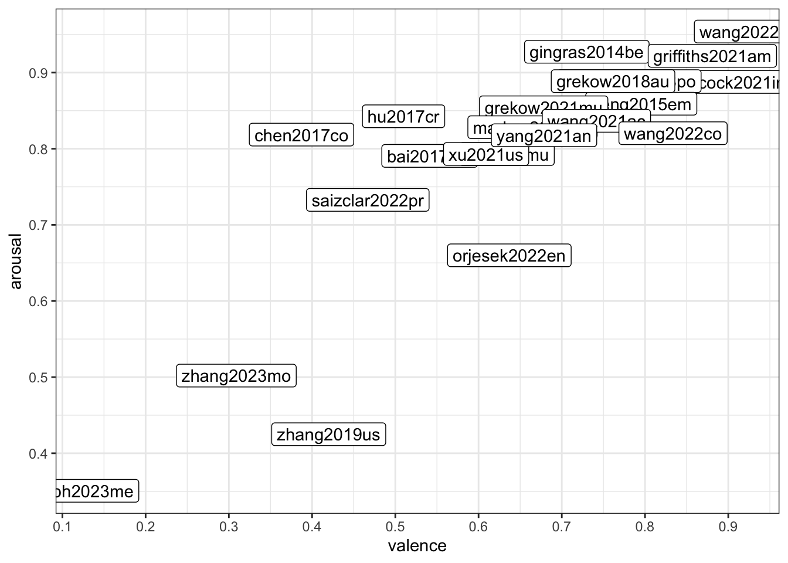
## could be more informative when done with the full data
R_studies$citekey<-factor(R_studies$citekey)
R_studies$dimension<-factor(R_studies$dimension)
R_studies_split <- pivot_wider(R_studies,id_cols = c(unique_id,citekey,model_class_id), names_from = c(dimension), values_from = c(values),values_fn = mean)
R_studies_split<-drop_na(R_studies_split)
library(ggrepel)
g3 <- ggplot(R_studies_split,aes(x=valence,y=arousal,label=citekey,color=model_class_id,fill=model_class_id))+
geom_point(size=4)+
geom_label_repel(size=3, max.overlaps=50,show.legend = T,color='white')+
scale_x_continuous(breaks = seq(0,1,by=.25),limits = c(0,1))+
scale_y_continuous(breaks = seq(0,1,by=.25),limits = c(0,1))+
theme_bw()
g3Warning: ggrepel: 82 unlabeled data points (too many overlaps). Consider
increasing max.overlaps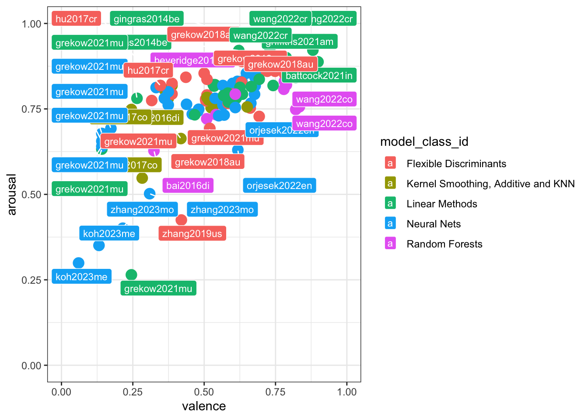
Plot success across the years
# Add year!
R_studies$year <- as.numeric(str_match(R_studies$citekey,'[0-9]+'))
g3 <- ggplot(R_studies,aes(x=year,y=values,colour=model_class_id))+
geom_point(show.legend = T)+
facet_wrap(.~dimension)+
theme_bw()
g3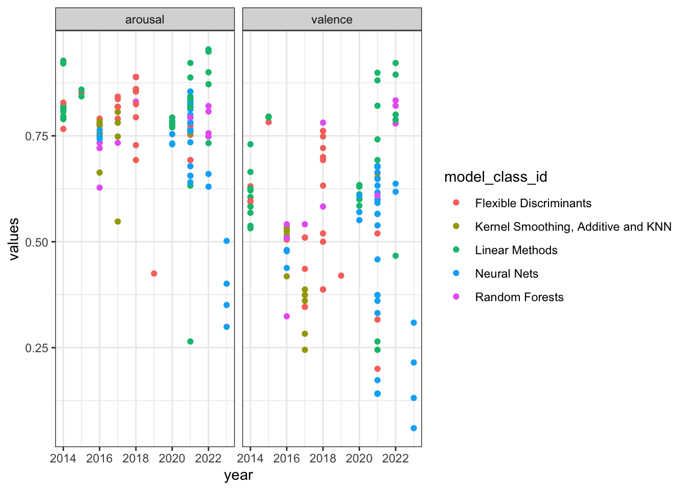
Simple model complexity metric
Ratio of obs./features or just a classification based on feature n (quantiles).
R_studies$feature_n[R_studies$feature_n==" 15; 23 in table, but 15 reported "] <- 15 #resolved from the paper
R_studies$feature_n[R_studies$feature_n==" 15; 23 in table, but 15 reported "] <- 15 #resolved
R_studies$feature_n[R_studies$feature_n==" before_selection = 45, after_selection = 6 "] <- 45 #resolved
R_studies$feature_n[R_studies$feature_n==" model 1: 52, model 2 = 68, model 3 = 260, model 4 = 388 "] <- 388 #resolved
R_studies$feature_n[R_studies$feature_n==" variable, 557 before feature selection "] <- 557 #resolved
R_studies$feature_n[R_studies$feature_n==" 50 PCA features "] <- 499 #resolved
R_studies$feature_n[str_detect(R_studies$feature_n,'150 PCA features')] <- 3000
R_studies$feature_n[str_detect(R_studies$feature_n,'pre_fitting = 21')] <- 21
R_studies$feature_n[str_detect(R_studies$feature_n,'548 dimensions')] <- 548
R_studies$feature_n[str_detect(R_studies$feature_n,'548; after reduct')] <- 548
R_studies$feature_n[str_detect(R_studies$feature_n,'60 handcrafted and filter bank')] <- 3600
R_studies$feature_n[str_detect(R_studies$feature_n,'Features deep-learned from audio (not specified) but 1802 in DEAM')] <- 260
# 2024-10-21: I changed the encoding for this one to "150 PCA features", so updated above.
# R_studies$feature_n[str_detect(R_studies$feature_n,'not specified')] <- 3000 # under-estimation based openSmile features and the paper arguing that they have 15 stat moments
R_studies$feature_n<-as.numeric(R_studies$feature_n)
print(quantile(R_studies$feature_n,c(0.333,0.666),na.rm = T))33.3% 66.6%
72 653 #quantile(R_studies$feature_n,c(0.25,0.50,0.75),na.rm = T)
# Assign
R_studies$feature_n_complexity <- cut(R_studies$feature_n,
breaks = c(0,
as.numeric(quantile(R_studies$feature_n,c(0.333),na.rm = T)),
as.numeric(quantile(R_studies$feature_n,c(0.666),na.rm = T)),
10000),
labels = c("Feature n < 236","Feature n > 236 & < 653","Feature n > 653"))
R_studies$feature_n_complexity <- cut(R_studies$feature_n,
breaks = c(0,30,300,10000),
labels = c("Feature n < 30","Feature n > 30 & < 300","Feature n > 300"))
table(R_studies$feature_n_complexity)
Feature n < 30 Feature n > 30 & < 300 Feature n > 300
40 54 142 Feature N and genre split
quantile(subset(R_studies,stimulus_genre_mixed=='SingleGenre')$feature_n,probs = seq(0,1,0.333)) 0% 33.3% 66.6% 99.9%
3 21 72 201 quantile(subset(R_studies,stimulus_genre_mixed=='MultiGenre')$feature_n,na.rm=TRUE,probs = seq(0,1,0.333)) 0% 33.3% 66.6% 99.9%
15 388 653 6670 # a combination of the two
R_studies$feature_n_complexity_genre <- cut(R_studies$feature_n,
breaks = c(0,15,501,653,10000),
labels = c("Small single genre study","Medium single genre/multigenre study","Medium-large single genre/multigenre study","Huge multigenre study"))
table(R_studies$feature_n_complexity_genre)
Small single genre study
18
Medium single genre/multigenre study
92
Medium-large single genre/multigenre study
94
Huge multigenre study
32 Explore feature_n_complexity and model success
Needs to be done from the unsummarised data (R_studies).
#tmp <- drop_na(R_studies)
tmp <- R_studies[!is.na(R_studies$values),]
library(ggdist)
tmp$dimension<-str_to_title(tmp$dimension)
tmp$model_class_id<-factor(tmp$model_class_id,
levels = c("Neural Nets","Flexible Discriminants", "Kernel Smoothing, Additive and KNN", "Random Forests","Linear Methods"),
labels = c("Neural\nNets","Flexible\nDiscriminants", "KS\n & KNN", "Random\nForests", "Linear\nMethods"))
g <- ggplot(tmp,aes(x=model_class_id,y=values,color=citekey,label=citekey,shape=stimulus_genre_mixed))+
stat_halfeye(aes(fill=citekey),point_interval="mean_qi", trim=FALSE, expand=FALSE, show.legend = FALSE,adjust = 1.25, density="bounded", point_size=3,scale = 1,alpha=0.5) +
geom_point(alpha=0.5,show.legend = F,position = position_jitter(width = .3))+
#geom_label_repel(size=2,max.overlaps = 50)+
facet_wrap(dimension~feature_n_complexity)+
ylab("Correlation Coefficient")+
xlab("Model Technique")+
scale_y_continuous(limits = c(0,1),expand = c(0.01,0.01))+
geom_text_repel(aes(x = model_class_id, y = values, label = studyREF),
stat = "summary", fun = mean,show.legend = F)+
theme_bw()
gWarning: Removed 55 rows containing missing values or values outside the scale range
(`geom_slabinterval()`).Warning: Removed 124 rows containing missing values or values outside the scale range
(`geom_slabinterval()`).Warning: Removed 61 rows containing missing values or values outside the scale range
(`geom_slabinterval()`).Warning: Removed 43 rows containing missing values or values outside the scale range
(`geom_slabinterval()`).Warning: ggrepel: 2 unlabeled data points (too many overlaps). Consider
increasing max.overlapsWarning: ggrepel: 15 unlabeled data points (too many overlaps). Consider
increasing max.overlapsWarning: ggrepel: 9 unlabeled data points (too many overlaps). Consider
increasing max.overlaps
#ggsave(filename = 'FeatureN_regression.pdf',g,height = 7,width = 11)Create descriptive table for the manuscript (Table 1, column 1)
TR <- NULL
TR$study_n <- length(unique(R_studies$citekey))
TR$model_n <- nrow(R_studies)
t<-table(R_studies$model_class_id)
t2 <- paste0(names(t),': ', as.numeric(t))
TR$model_types_n <- str_c(t2,collapse = "\n")
TR$feature_Desc <- paste0('Min=',min(R_studies$feature_n,na.rm = TRUE),', Md=',median(R_studies$feature_n,na.rm = TRUE),', Max=', max(R_studies$feature_n,na.rm = TRUE))
TR$stimulus_Desc <- paste0('Min=',min(R_studies$stimulus_n,na.rm = TRUE),', Md=',median(R_studies$stimulus_n,na.rm = TRUE),', Max=', max(R_studies$stimulus_n,na.rm = TRUE))
print(TR)$study_n
[1] 23
$model_n
[1] 236
$model_types_n
[1] "Flexible Discriminants: 58\nKernel Smoothing, Additive and KNN: 24\nLinear Methods: 62\nNeural Nets: 70\nRandom Forests: 22"
$feature_Desc
[1] "Min=3, Md=548, Max=6670"
$stimulus_Desc
[1] "Min=20, Md=330, Max=2486"Export as csv
write.csv(x = R_studies,file = 'R_studies.csv')
write.csv(x = R_summary,file = 'R_summary.csv')Pull data to analyse classification studies
C_studies<-metaMER_results
sum(is.na(C_studies$measure)) # 0[1] 0sum(is.na(C_studies$statistic)) # 426[1] 414C_studies$statistic[is.na(C_studies$statistic)]<-'acc'
C_studies <- dplyr::filter(C_studies, str_detect(measure,'mcc|accuracy|auc|classification|f1|fscore|fvalue|kappa|precision|recall')) #
table(C_studies$measure)
accuracy auc classification f1 fscore
275 4 2 6 8
fvalue kappa mcc precision recall
2 40 40 12 12 dim(C_studies)[1] 401 23table(C_studies$statistic)
acc lower mean median null pvalue upper
160 40 33 48 40 40 40 C_studies <- dplyr::filter(C_studies, str_detect(statistic,'mean|median|acc')) #
dim(C_studies)[1] 241 23length(unique(C_studies$citekey))[1] 14table(C_studies$measure,C_studies$statistic)
acc mean median
accuracy 48 19 48
auc 4 0 0
classification 0 2 0
f1 4 2 0
fscore 8 0 0
fvalue 0 2 0
kappa 40 0 0
mcc 40 0 0
precision 8 4 0
recall 8 4 0table(C_studies$measure,C_studies$citekey)
agarwal2021an alvarez2023ri bai2016di bai2017mu
accuracy 9 4 15 0
auc 0 0 0 0
classification 0 0 0 2
f1 0 2 0 0
fscore 0 0 0 0
fvalue 0 0 0 0
kappa 9 2 0 0
mcc 9 2 0 0
precision 0 2 0 0
recall 0 2 0 0
bhuvanakumar2023em dufour2021us hizlisoy2021mu hu2022de
accuracy 16 6 8 0
auc 0 0 0 4
classification 0 0 0 0
f1 0 0 0 4
fscore 0 0 8 0
fvalue 0 0 0 0
kappa 16 6 0 0
mcc 16 6 0 0
precision 0 0 8 0
recall 0 0 8 0
nguyen2017an panda2020no sorussa2020em yeh2014po zhang2016br
accuracy 2 1 4 2 32
auc 0 0 0 0 0
classification 0 0 0 0 0
f1 0 0 0 0 0
fscore 0 0 0 0 0
fvalue 0 0 0 2 0
kappa 2 1 4 0 0
mcc 2 1 4 0 0
precision 0 0 0 2 0
recall 0 0 0 2 0
zhang2017fe
accuracy 16
auc 0
classification 0
f1 0
fscore 0
fvalue 0
kappa 0
mcc 0
precision 0
recall 0table(C_studies$statistic,C_studies$citekey)
agarwal2021an alvarez2023ri bai2016di bai2017mu bhuvanakumar2023em
acc 27 6 0 0 48
mean 0 8 15 2 0
median 0 0 0 0 0
dufour2021us hizlisoy2021mu hu2022de nguyen2017an panda2020no
acc 18 32 8 6 3
mean 0 0 0 0 0
median 0 0 0 0 0
sorussa2020em yeh2014po zhang2016br zhang2017fe
acc 12 0 0 0
mean 0 8 0 0
median 0 0 32 16# ToDo
# how to convert accuracy (precision, recall, f) into kappa or mcc
# There IS NO solution unfortunately, accuracy and mcc can vary independently, but
# see Chicco and Jurman, 2020, https://doi.org/10.1186/s12864-019-6413-7
# which shows that MCC is the best. The paer compares accuracy and F1 to MCC
# and shows high correlations between accuracy and MCC (r=0.90-0.92).
# It is only the exceptions (unbalanced datasets with binary classification) that deliver major discrepancies. Our dataset does not seem to be having these, so
# perhaps we can equate accuracy with MCC in a minority of cases.
# Conversion
# convert one 'classification' into accuracy (bai2017mu)
# convert one 'f1' into accuracy (hu2022de)
C_studies$measure[C_studies$citekey=='bai2017mu'] <- 'accuracy'
C_studies$measure[C_studies$citekey=='hu2022de' & C_studies$measure=='f1']<-'accuracy'
dim(C_studies)[1] 241 23C_studies <- dplyr::filter(C_studies, str_detect(measure,'mcc|accuracy')) #
dim(C_studies)[1] 161 23table(C_studies$measure,C_studies$citekey)
agarwal2021an alvarez2023ri bai2016di bai2017mu bhuvanakumar2023em
accuracy 9 4 15 2 16
mcc 9 2 0 0 16
dufour2021us hizlisoy2021mu hu2022de nguyen2017an panda2020no
accuracy 6 8 4 2 1
mcc 6 0 0 2 1
sorussa2020em yeh2014po zhang2016br zhang2017fe
accuracy 4 2 32 16
mcc 4 0 0 0# take accuracy as MCC in those studies that have not specified mcc
C_studies$accuracy_converted_to_mcc <- 0
C_studies$accuracy_converted_to_mcc[C_studies$citekey=='bai2016di' |
C_studies$citekey=='bai2017mu' |
C_studies$citekey=='hizlisoy2021mu' |
C_studies$citekey=='hu2022de' |
C_studies$citekey=='yeh2014po' |
C_studies$citekey=='zhang2016br' |
C_studies$citekey=='zhang2017fe'
& C_studies$measure=='accuracy']<-1
C_studies$measure[C_studies$citekey=='bai2016di' |
C_studies$citekey=='bai2017mu' |
C_studies$citekey=='hizlisoy2021mu' |
C_studies$citekey=='hu2022de' |
C_studies$citekey=='yeh2014po' |
C_studies$citekey=='zhang2016br' |
C_studies$citekey=='zhang2017fe'
& C_studies$measure=='accuracy']<-'mcc'
table(C_studies$measure,C_studies$citekey)
agarwal2021an alvarez2023ri bai2016di bai2017mu bhuvanakumar2023em
accuracy 9 4 0 0 16
mcc 9 2 15 2 16
dufour2021us hizlisoy2021mu hu2022de nguyen2017an panda2020no
accuracy 6 0 0 2 1
mcc 6 8 4 2 1
sorussa2020em yeh2014po zhang2016br zhang2017fe
accuracy 4 0 0 0
mcc 4 2 32 16C_studies <- dplyr::filter(C_studies, str_detect(measure,'mcc')) #
dim(C_studies)[1] 119 24table(C_studies$measure,C_studies$accuracy_converted_to_mcc)
0 1
mcc 40 79t.test(C_studies$values,y = C_studies$accuracy_converted_to_mcc) # There is a difference
Welch Two Sample t-test
data: C_studies$values and C_studies$accuracy_converted_to_mcc
t = 1.6257, df = 143.5, p-value = 0.1062
alternative hypothesis: true difference in means is not equal to 0
95 percent confidence interval:
-0.0160749 0.1650008
sample estimates:
mean of x mean of y
0.7383285 0.6638655 Get the number of categories in the classification task
tmp <- metaMER_results
tmp2 <- tmp[which(tmp$statistic=='n'),]
no_of_classes <- summarise(group_by(tmp2,citekey),first(values))
print(no_of_classes)# A tibble: 12 × 2
citekey `first(values)`
<chr> <dbl>
1 agarwal2021an 4
2 alvarez2023ri 4
3 bai2016di 4
4 bai2017mu 4
5 bhuvanakumar2023em 2
6 dufour2021us 5
7 hizlisoy2021mu 3
8 hu2022de 2
9 nguyen2017an 6
10 panda2020no 4
11 sorussa2020em 8
12 yeh2014po 4hist(no_of_classes$`first(values)`)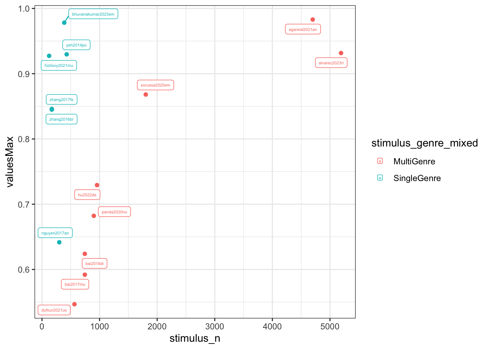
rm(tmp,tmp2)Homogenise the stimulus N
table(C_studies$stimulus_n)
387
16
124
8
171
48
1802
4
300
2
429; 350 popular songs + 79 songs from the Beatles (Mirex 2009 collection)
2
5192; 12 per user in user validation (not included here due to little information), AcousticBrainz validation: 60000
2
744
15
744
2
900
1
956
4
ISMIR2012: 2886, NJU_V1: 777, Hindi: 1037
9
total: 564; unambiguous: 416, circular validation: 39
6 # Deal with four studies involving multiple datasets:
C_studies$stimulus_n[C_studies$stimulus_n==" 429; 350 popular songs + 79 songs from the Beatles (Mirex 2009 collection) "] <- 429 # resolved from the paper
C_studies$stimulus_n[C_studies$stimulus_n==" 5192; 12 per user in user validation (not included here due to little information), AcousticBrainz validation: 60000 "] <- 5192 # resolved
C_studies$stimulus_n[C_studies$stimulus_n==" ISMIR2012: 2886, NJU_V1: 777, Hindi: 1037 "] <- 2886+777+1037 # decided to take this from validation
C_studies$stimulus_n[C_studies$stimulus_n==" total: 564; unambiguous: 416, circular validation: 39 "] <- 564 #
#table(C_studies$stimulus_n)
C_studies$stimulus_n <- as.numeric(C_studies$stimulus_n)Diagnostics
library(ggplot2)
g1<-ggplot(C_studies,aes(x=values,fill=citekey))+
geom_histogram()+
facet_wrap(.~model_class_id)+
theme_dark()+
scale_x_continuous(breaks = seq(0,1,by=.1))
g1Select a summary measure for valence and arousal separately
library(tidyverse)
C_studies$citekey <- factor(C_studies$citekey)
C_summary <- summarise(group_by(C_studies,citekey),valuesMean=mean(values,na.rm=TRUE),valuesMedian=median(values,na.rm=TRUE),valuesMax=max(values,na.rm=TRUE),stimulus_n=first(stimulus_n),studyREF=first(studyREF),model_class_id=first(model_class_id), stimulus_genre_mixed=first(stimulus_genre_mixed),journal_type = first(journal_type))Visualise Summary
g2 <- ggplot(C_summary,aes(x=stimulus_n,y=valuesMax,label=citekey,color=stimulus_genre_mixed))+
geom_point()+
geom_label_repel(size=1.5)+
# coord_flip()+
theme_bw()
g2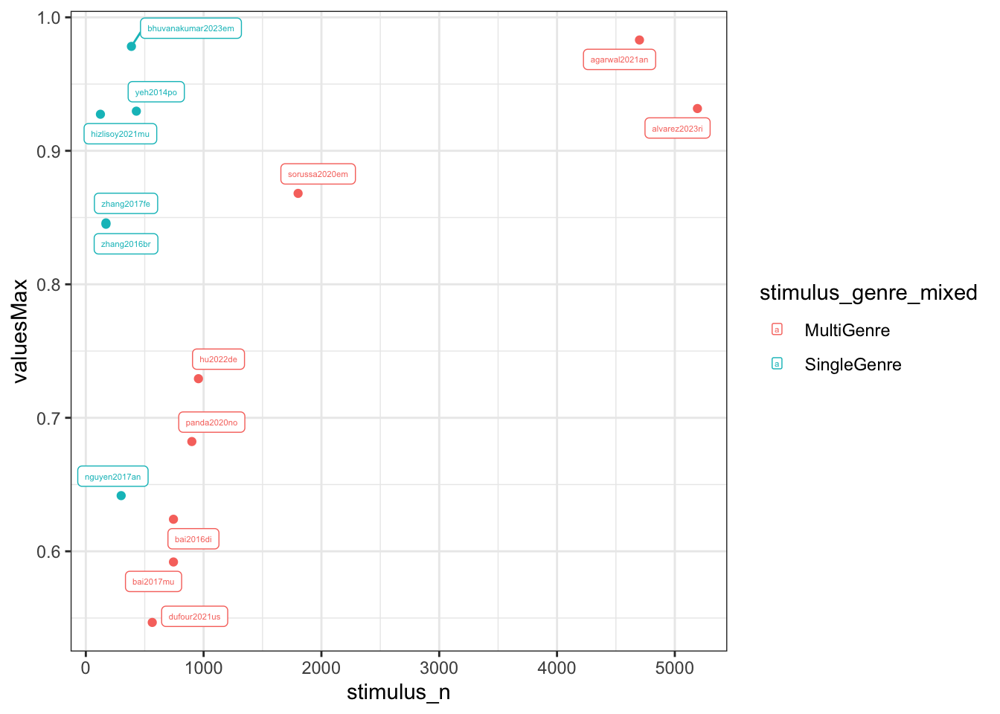
g3 <- ggplot(C_summary,aes(x=stimulus_n,y=valuesMax,label=citekey,color=model_class_id))+
geom_point()+
geom_label_repel(size=1.2)+
# coord_flip()+
theme_bw()
g3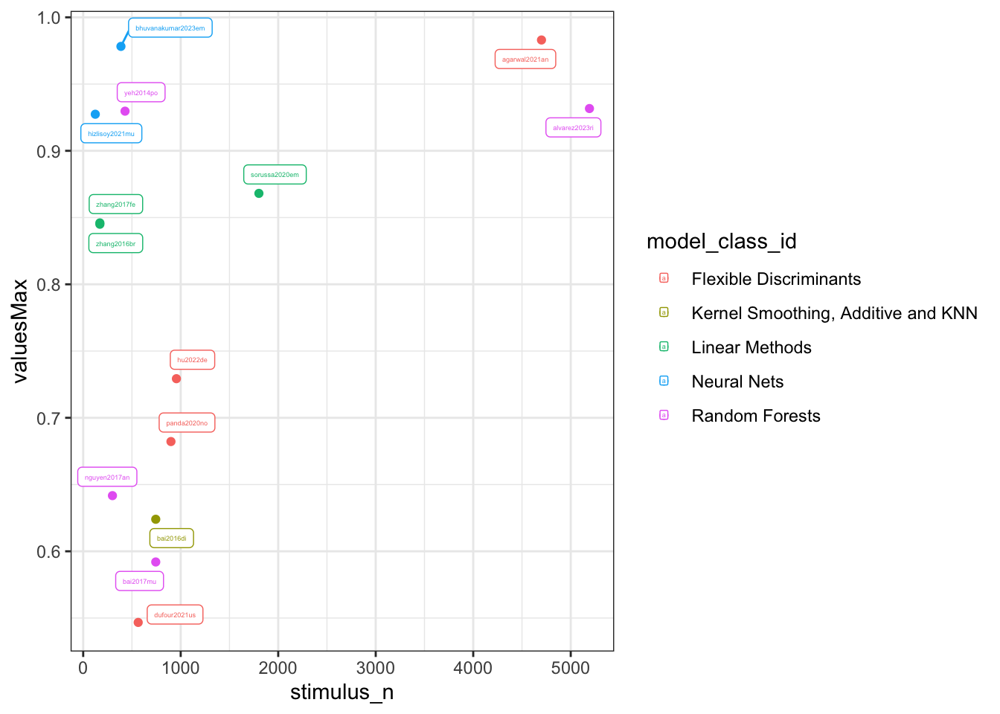
## could be more informative when done with the full data
C_studies$citekey<-factor(C_studies$citekey)
library(ggrepel)
g4 <- ggplot(C_studies,aes(x=stimulus_n,y=values,label=citekey,color=model_class_id,fill=model_class_id))+
geom_point(size=4)+
geom_label_repel(size=1.2, max.overlaps=50,show.legend = T,color='white')+
# scale_x_continuous(breaks = seq(0,1,by=.25),limits = c(0,1))+
# scale_y_continuous(breaks = seq(0,1,by=.25),limits = c(0,1))+
theme_bw()
g4Warning: Removed 1 row containing missing values or values outside the scale range
(`geom_point()`).Warning: Removed 1 row containing missing values or values outside the scale range
(`geom_label_repel()`).Warning: ggrepel: 19 unlabeled data points (too many overlaps). Consider
increasing max.overlaps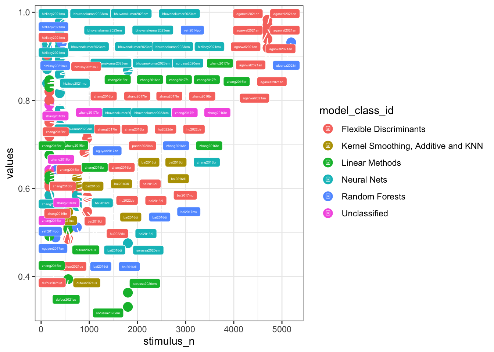
Simple model complexity metric based on feature_n
table(C_studies$feature_n)
'eight different non‐text‐dependent features are employed; they are rhythm, timbre,intensity, chromagram, MFCC, OSC, SSDs, and DWCH'
9
119
32
122
4
126, retained 97
6
1702; best model uses 100 after reduction
1
231
4
3
2
397
2
548 dimensions. Post-reduction: 139 (PCA), 276 (ReliefF)
2
548; after reduction, 139 for PCA and 276 for ReliefF
15
8; 3 after shrinkage-method feature selection
16
8904
8
between 9 and 10
2
summarize feature categories, but aren't explicit about which ones
16 C_studies$feature_n[str_detect(C_studies$feature_n,'eight different ')]<-600 # arbitrary!
C_studies$feature_n[str_detect(C_studies$feature_n,'126, retained 97')]<-126
C_studies$feature_n[str_detect(C_studies$feature_n,'1702; best model uses 100 after reduction')]<-1702 # arbitrary!
C_studies$feature_n[str_detect(C_studies$feature_n,'548; after reduction, ')] <- 548
C_studies$feature_n[str_detect(C_studies$feature_n,'548 dimensions')] <- 548
C_studies$feature_n[str_detect(C_studies$feature_n,'548. Post-reduction')] <- 548
C_studies$feature_n[str_detect(C_studies$feature_n,'8; 3 after')]<-8
C_studies$feature_n[str_detect(C_studies$feature_n,'between 9 and 10')]<-10
C_studies$feature_n[str_detect(C_studies$feature_n,'summarize feature')]<-600 # arbitrary
table(C_studies$feature_n)
119 122 231 3 397 8904 10 126
32 4 4 2 2 8 2 6
1702 548 600 8
1 17 25 16 C_studies$feature_n <- as.numeric(C_studies$feature_n)
ggplot(C_studies,aes(x=feature_n))+geom_histogram()`stat_bin()` using `bins = 30`. Pick better value with `binwidth`.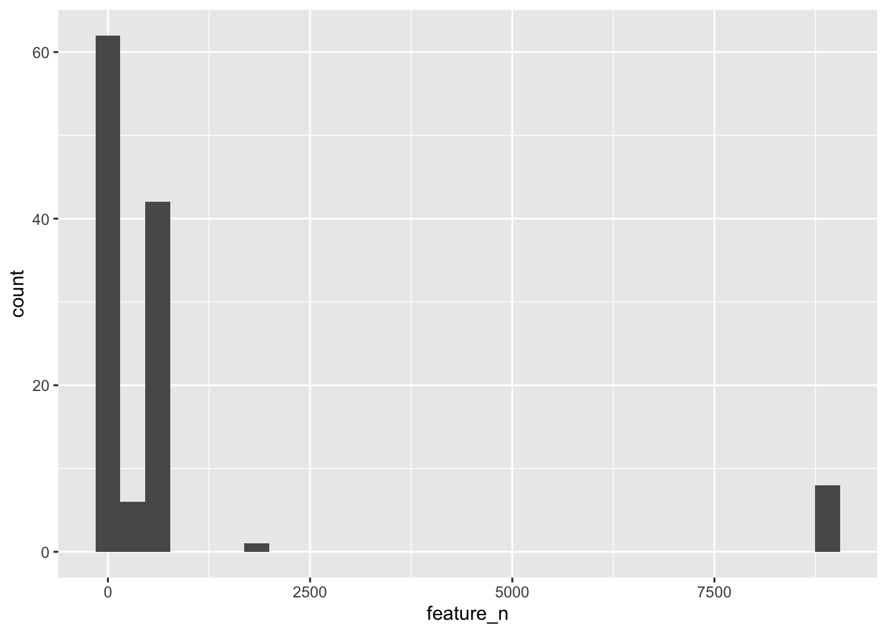
#print(quantile(C_studies$feature_n,c(0.333,0.666),na.rm = TRUE))
#quantile(R_studies$feature_n,c(0.25,0.50,0.75),na.rm = T)
# Assign
C_studies$feature_n_complexity <- cut(C_studies$feature_n,
breaks = c(0,30,300,
10000),
labels = c("Feature n < 30","Feature n > 30 & < 300","Feature n > 300"))
table(C_studies$feature_n_complexity)
Feature n < 30 Feature n > 30 & < 300 Feature n > 300
20 46 53 Explore feature_n_complexity and model success
Needs to be done from the unsummarised data (C_studies).
tmp <- drop_na(C_studies)
library(ggdist)
tmp$dimension<-str_to_title(tmp$dimension)
tmp$model_class_id<-factor(tmp$model_class_id,
levels = c("Neural Nets","Flexible Discriminants", "Kernel Smoothing, Additive and KNN", "Random Forests","Linear Methods"),
labels = c("Neural\nNets","Flexible\nDiscriminants", "KS\n & KNN", "Random\nForests", "Linear\nMethods"))
g <- ggplot(tmp,aes(x=model_class_id,y=values,color=citekey,label=citekey,shape=stimulus_genre_mixed))+
stat_halfeye(aes(fill=citekey),point_interval="mean_qi", trim=FALSE, expand=FALSE, show.legend = FALSE,adjust = 1.25, density="bounded", point_size=3,scale = 1,alpha=0.5) +
geom_point(alpha=0.5,show.legend = F,position = position_jitter(width = .3))+
#geom_label_repel(size=2,max.overlaps = 50)+
facet_wrap(.~feature_n_complexity)+
ylab("Correlation Coefficient")+
xlab("Model Technique")+
scale_y_continuous(limits = c(0,1),expand = c(0.01,0.01))+
geom_text_repel(aes(x = model_class_id, y = values, label = studyREF),
stat = "summary", fun = mean,show.legend = F)+
theme_bw()
print(g)Warning: Removed 116 rows containing missing values or values outside the scale range
(`geom_slabinterval()`).Warning: Removed 87 rows containing missing values or values outside the scale range
(`geom_slabinterval()`).Warning: Removed 34 rows containing missing values or values outside the scale range
(`geom_slabinterval()`).Warning: ggrepel: 1 unlabeled data points (too many overlaps). Consider
increasing max.overlaps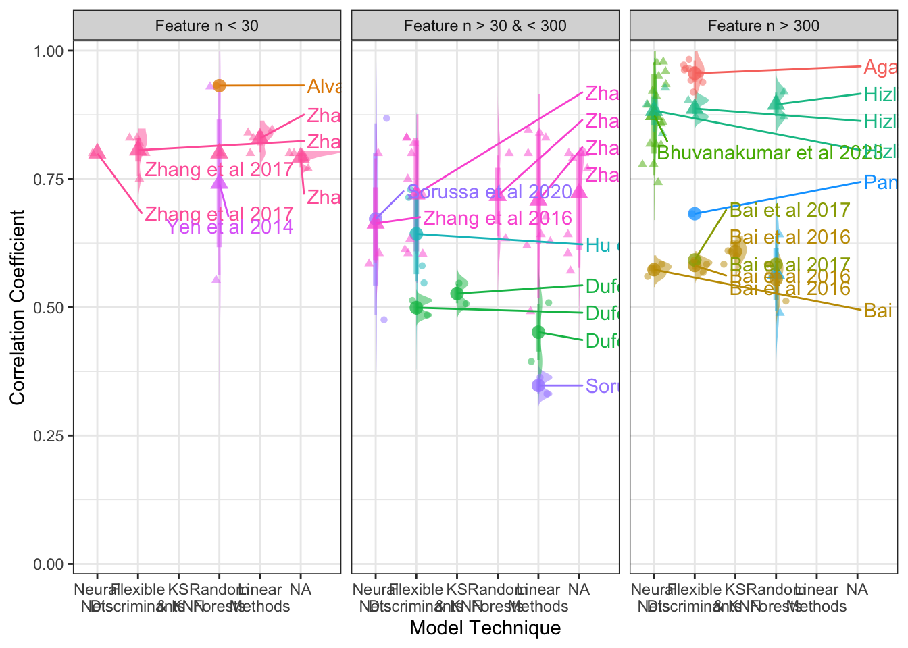
#ggsave(filename = 'FeatureN_regression.pdf',g,height = 7,width = 11)Create descriptive table for the manuscript (Table 1, column 2)
TC <- NULL
TC$study_n <- length(unique(C_studies$citekey))
TC$model_n <- nrow(C_studies)
t<-table(C_studies$model_class_id)
t2 <- paste0(names(t),': ', as.numeric(t))
TC$model_types_n <- str_c(t2,collapse = "\n")
TC$feature_Desc <- paste0('Min=',min(C_studies$feature_n,na.rm = TRUE),', Md=',median(C_studies$feature_n,na.rm = TRUE),', Max=', max(C_studies$feature_n,na.rm = TRUE))
TC$stimulus_Desc <- paste0('Min=',min(C_studies$stimulus_n,na.rm = TRUE),', Md=',median(C_studies$stimulus_n,na.rm = TRUE),', Max=', max(C_studies$stimulus_n,na.rm = TRUE))
print(TC)$study_n
[1] 14
$model_n
[1] 119
$model_types_n
[1] "Flexible Discriminants: 37\nKernel Smoothing, Additive and KNN: 8\nLinear Methods: 17\nNeural Nets: 29\nRandom Forests: 15\nUnclassified: 13"
$feature_Desc
[1] "Min=3, Md=126, Max=8904"
$stimulus_Desc
[1] "Min=124, Md=387, Max=5192"Export as csv
write.csv(x = C_studies,file = 'C_studies.csv')
write.csv(x = C_summary,file = 'C_summary.csv')